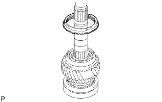
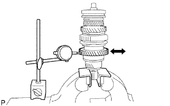

TRỤC THỨ CẤP > LẮP RÁP |
| 1. LẮP MOAYƠ ĐỒNG TỐC NO.2 |
 |
Bôi dầu bánh răng lên ống trượt đồng tốc và lắp nó vào moayơ đồng tốc.
Lắp 3 khoá đồng tốc vào moayơ đồng tốc bằng 2 lò xo hãm đồng tốc.
| 2. LẮP VÒNG BI ĐŨA KIM BÁNH RĂNG SỐ 3 |
 |
Bôi dầu bánh răng lên vòng bi đũa kim và lắp nó vào trục thứ cấp.
| 3. LẮP BÁNH RĂNG SỐ 3 |
Bôi dầu bánh răng lên bánh răng số 3 và lắp nó vào trục thứ cấp.
| 4. LẮP VÀNH ĐỒNG TỐC NO.2 |
Bôi dầu bánh răng lên vành đồng tốc và lắp nó vào bánh răng số 3.
| 5. LẮP MOAYƠ ĐỒNG TỐC NO.2 |
Dùng SST và máy ép, ép moay ơ đồng tốc No.2 vào trục thứ cấp.
Chọn phanh hãm trục moay ơ đồng tốc sao cho cho độ rơ hướng kính nhỏ nhất.
| Dấu | Độ dày |
| C-1 | 1.75 đến 1.80 mm (0.0689 đến 0.0709 in.) |
| D | 1.80 đến 1.85 mm (0.0709 đến 0.0728 in.) |
| D-1 | 1.85 đến 1.90 mm (0.0728 đến 0.0748 in.) |
| E | 1.90 đến 1.95 mm (0.0748 đến 0.0768 in.) |
| E-1 | 1.95 đến 2.00 mm (0.0768 đến 0.0787 in.) |
| F | 2.00 đến 2.05 mm (0.0787 đến 0.0807 in.) |
| F-1 | 2.05 đến 2.10 mm (0.0807 đến 0.0827 in.) |
 |
Dùng kìm tháo phanh, lắp phanh hãm.
| 6. KIỂM TRA KHE HỞ DỌC TRỤC BÁNH RĂNG SỐ 3 |
Dùng thước lá, đo khe hở dọc trục.
| 7. LẮP MOAY Ơ ĐỒNG TỐC HỘP SỐ NO.1 |
Bôi dầu bánh răng lên bánh răng số lùi và lắp nó vào moayơ đồng tốc.
Lắp 3 khoá đồng tốc vào maoy ơ đồng tốc bằng 2 lò xo khoá đồng tốc chuyển số.
| 8. LẮP VÒNG BI ĐŨA KIM BÁNH RĂNG SỐ 2 |
Bôi dầu bánh răng lên vòng bi đũa kim và lắp nó vào trục thứ cấp.
| 9. LẮP BÁNH RĂNG SỐ 2 |
Bôi dầu bánh răng lên bánh răng số 2 và lắp nó vào trục thứ cấp.
| 10. LẮP VÀNH ĐỒNG TỐC NO.1 (cho bánh răng số 2) |
|  |
Bôi dầu bánh răng lên vòng đồng tốc No.1 và lắp nó vào bánh răng số 2.
| 11. LẮP MOAY Ơ ĐỒNG TỐC HỘP SỐ NO.1 |
Dùng SST và máy ép, ép moay ơ đồng tốc vào trục thứ cấp.
| 12. KIỂM TRA KHE HỞ DỌC TRỤC BÁNH RĂNG SỐ 2 |
Dùng đồng hồ so, đo khe hở hướng trục.
| 13. LẮP VÀNH ĐỒNG TỐC NO.1 (cho bánh răng số 1) |
Bôi dầu bánh răng lên vành đồng tốc và lắp nó vào moayơ đồng tốc No.1.
| 14. LẮP BI HÃM VÀNH TRONG VÒNG BI BÁNH RĂNG SỐ 1 |
Bôi dầu bánh răng lên bi hãm và lắp nó vào trục thứ cấp.
| 15. LẮP VÀNH TRONG VÒNG BI BÁNH RĂNG SỐ 1 |
Bôi dầu bánh răng lên vòng bi đũa kim.
Lắp vành trong và vòng bi đũa kim vào bánh răng số 1.
| 16. LẮP BÁNH RĂNG SỐ 1 |
Bôi dầu bánh răng lên bánh răng số 1 và lắp nó vào trục thứ cấp.
| 17. LẮP VÒNG BI GIỮA CỦA TRỤC THỨ CẤP |
Dùng SST và máy ép, ép vòng bi giữa vào trục thứ cấp.
| 18. KIỂM TRA KHE HỞ DỌC TRỤC BÁNH RĂNG SỐ 1 |
Dùng đồng hồ so, đo khe hở hướng trục.
| 19. LẮP BÁNH RĂNG SỐ 5 |
Dùng SST và máy ép, ép bánh răng số 5 vào trục thứ cấp.
Chọn phanh hãm trục sao cho cho độ rơ hướng kính nhỏ nhất.
| Dấu | Độ dày |
| A | 2.67 đến 2.72 mm (0.1051 đến 0.1071 in.) |
| B | 2.73 đến 2.78 mm (0.1075 đến 0.1094 in.) |
| C | 2.79 đến 2.84 mm (0.1098 đến 0.1118 in.) |
| D | 2.85 đến 2.90 mm (0.1122 đến 0.1141 in.) |
| E | 2.91 đến 2.96 mm (0.1146 đến 0.1165 in.) |
| F | 2.97 đến 3.02 mm (0.1169 đến 0.1189 in.) |
| G | 3.03 đến 3.08 mm (0.1193 đến 0.1213 in.) |
| H | 3.09 đến 3.14 mm (0.1217 đến 0.1236 in.) |
| J | 3.15 đến 3.20 mm (0.1240 đến 0.1260 in.) |
| K | 3.21 đến 3.26 mm (0.1264 đến 0.1283 in.) |
| L | 3.27 đến 3.32 mm (0.1287 đến 0.1307 in.) |
Dùng tô vít và một búa, đóng phanh hãm vào.
| 20. LẮP BÁNH RĂNG DẪN ĐỘNG ĐỒNG HỒ TỐC ĐỘ |
 |
Dùng kìm tháo phanh, lắp phanh hãm.
Lắp viên bi.
Lắp bánh răng chủ động.
Dùng kìm tháo phanh, lắp phanh hãm.
| 21. KIỂM TRA KHE HỞ HƯỚNG KÍNH BÁNH RĂNG SỐ 3 |
 |
Dùng đồng hồ so, đo khe hở hướng kính.
| 22. KIỂM TRA KHE HỞ HƯỚNG KÍNH BÁNH RĂNG SỐ 2 |
 |
Dùng đồng hồ so, đo khe hở hướng kính.
| 23. KIỂM TRA KHE HỞ HƯỚNG KÍNH BÁNH RĂNG SỐ 1 |
|  |
Dùng đồng hồ so, đo khe hở hướng kính.